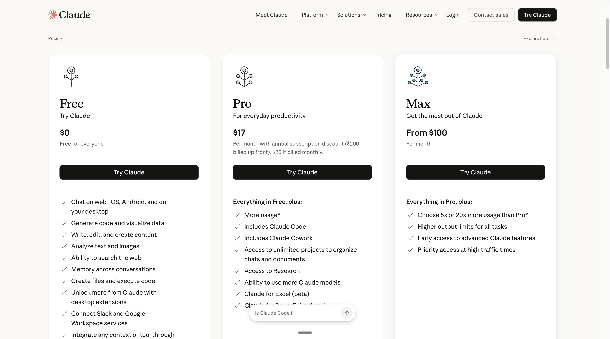
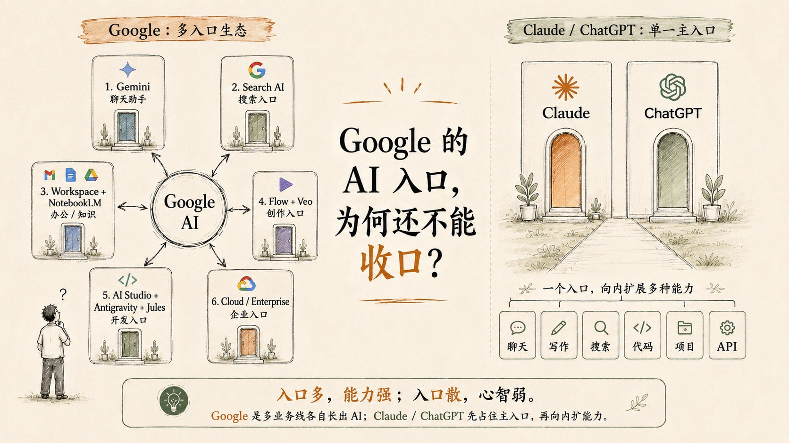
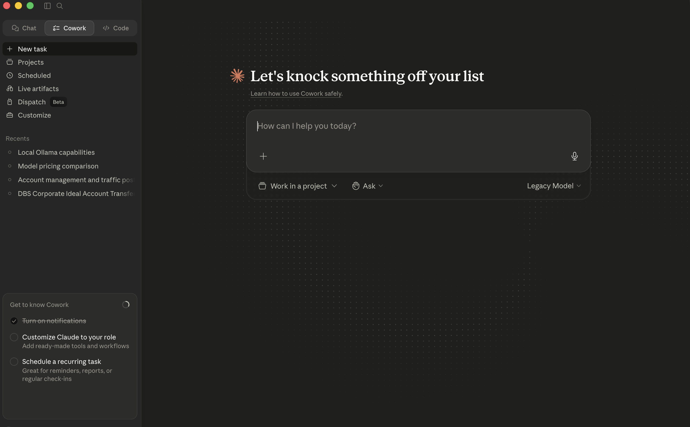

I've been paying for Claude Pro since early 2026. Not because it's perfect. Because Anthropic's product philosophy is the closest thing to how I actually want to work with AI.
But I want to be upfront about something: Claude's language model is weaker than ChatGPT in some ways. When I asked it to write a Chinese blog post, the output was grammatically correct but stylistically dead. Like a textbook. ChatGPT got the tone right on the first try. I keep that in mind every time I recommend Claude to someone.

Claude's current pricing: Pro at $17/month (annual) unlocks Code, Cowork, Projects, and Research.
Claude Pro costs $17/month if you pay annually ($20 monthly). For that, you get:
Max tier starts at $100/month for 5x usage. I don't need it yet. Pro handles my daily workflow fine.

The Claude setup flow most people skip. Do this once, and Claude becomes a completely different tool.
Most Claude vs ChatGPT comparisons miss the single biggest differentiator: Claude's Project system. Here's the setup flow that 90% of users skip, and it's why their Claude feels generic.
Do this once. The difference is night and day. Without Projects, Claude is a chatbot. With Projects, it's a specialized assistant that remembers your conventions.

Google has 6+ AI entry points. Claude and ChatGPT have one door with everything inside.
This is where I disagree with most benchmark comparisons. Yes, GPT-5.3 scores higher on some language tasks. But Anthropic's product architecture is better designed.
Look at Google's strategy: 6 different AI products (Gemini, Search AI, Workspace AI, Flow+Veo, AI Studio, Cloud AI) - each with its own interface, billing, and limitations. The analyst who made this diagram nailed it: "入口多，能力强；入口散，心智弱" - many entry points scatter user attention.
Claude and ChatGPT took the opposite approach: one primary door, then expand capabilities inward. Inside that single interface, you get chat, writing, search, coding, projects, and API access. You don't context-switch between 6 apps.
When I switch from claude.com/chat to Claude Code in my terminal, it's the same model, same memory, same projects. There's no "oh this is the coding version, let me re-explain my repo structure." It just knows.
Two specific weaknesses I've run into:
First, creative writing. Claude's prose is flatter, less varied in tone. I noticed this when I tried to have it write a Chinese blog post. It was technically correct but read like a machine translation. ChatGPT captured the nuance.
Second, Cowork is still in beta and it shows. Task scheduling works, but error recovery is fragile. If a background task hits an edge case, it doesn't come back and ask - it just fails silently. I check the Cowork dashboard more often than I'd like.

My actual Claude Cowork dashboard. I run 3-4 active projects here.
This is a real screenshot of my Cowork interface. You can see what I'm actually using Claude for:
None of these are "chat for fun." They're all task-oriented workflows that I run in Projects with attached files and custom instructions. This is how Claude is designed to be used.
My real take after months of daily use: Anthropic's system design is better. Projects, Code, Cowork, and MCP integrations create a cohesive workflow that OpenAI hasn't matched. But OpenAI's base model is stronger at pure language tasks.
If you're building software, managing workflows, or doing research - Claude wins. If you're writing novels, marketing copy, or multilingual content - ChatGPT is still ahead.
Most senior engineers I know run both. Claude for architecture and system design. ChatGPT for copy and creative refinement.
If you can only afford one and your work involves code or structured reasoning, Claude Pro at $17/month is the better investment. The Projects system alone justifies the price. It's the difference between "using AI" and "having an AI teammate."